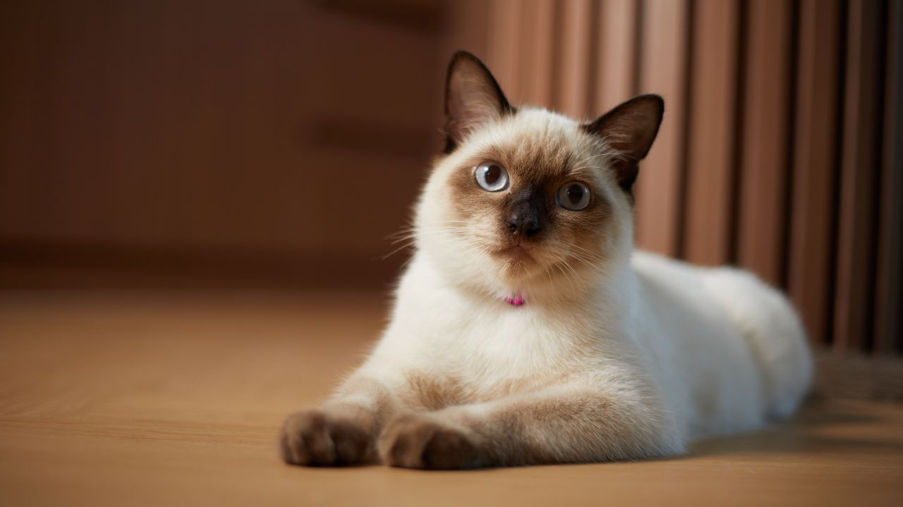

A origem dos siameses é ainda desconhecida e pouco se sabe sobre
quem eram os seus antepassados. No entanto, a única informação
correta é sobre onde esses gatinhos surgiram. Eles nasceram na
Tailândia, antigo Império de Sião. E por sua origem, são considerados
a primeira raça de gatos vinda do Oriente.
Logo que chegaram na Inglaterra, os gatos siameses começaram a chamar
muita atenção pela beleza e comportamento. Com isso, o cônsul inglês Owen Gould
decidiu expor esses gatinhos em um concurso de beleza em Londres. O evento
ocorreu no Palácio de Cristal, em 1885. Como eram muito diferentes dos gatos
que existiam na Inglaterra naquele período, os siameses acabaram se destacando.
Afetuosos, companheiros e muito amigáveis, os gatos siameses são perfeitos
para as famílias. Esse bichano costuma se dar muito bem com crianças e outros
animais, além disso tem uma ótima interação com atividades e brincadeiras.
No entanto, eles não gostam de ficar sozinhos e precisam de cuidados.
Essa história de que os gatos não precisam de banho pode não funcionar com os
siameses. Devido ao pelo curto, eles precisam de banhos regulares, logo, o tutor
deve acostumar o gatinho a tomar banho ainda filhote.
Os gatos siameses também já fizeram sucesso nas telinhas. A raça foi representada
no clássico da Disney, A Dama e o Vagabundo. No filme, a cadelinha Lady sofre alguns
perrengues quando precisa passar alguns dias na casa de dois siameses
manipuladores, “Si” e “Am”.